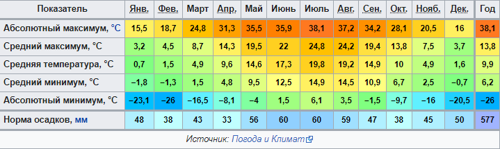
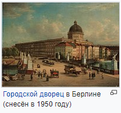
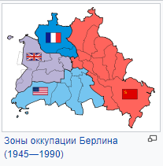
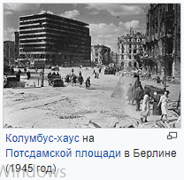
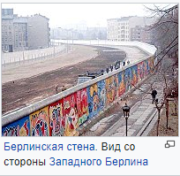

Топоним
Название Берлин восходит к славянскому и происходит от старополабского бирлин, берлин, означающему «болотистая место»: корень бирл-, берл- (болото, трясина) дополнен суффиксом места -ин[4][5][6][7]. От сходного индоевропейского корня wern-/werl (что также значит «болотистая местность») происходят названия многих европейских городов.
Документальная запись города с артиклем (der Berlin) говорит о принятии жителями названия (урочище)[4][5]. Наряду с прочими топонимами славянского происхождения, оканчивающимися на -ин (Шверин, Щецин, Ойтин, Темплин, Кюстрин и др.), Берлин произносится с ударением на последний слог[6].
Согласно народноэтимологической версии (например, исследователь Теодор Целль (нем. Theodor Zell), название города произошло от немецкого слова «медведь» (нем. Bär). Как минимум с 1280 года медведь является символом Берлина[8]. Однако, название города не связано ни с предполагаемым основателем города Альбрехтом Медведем, ни с гербовым животным Берлина. Гласный герб используется в попытке образно изобразить название города в немецкой интерпретации, поэтому это герб происходит от названия города, а не наоборот[9].
Географическое положение
Берлин расположен на востоке Германии, в 70 километрах от границы с Польшей. Берлин обладает правами федеральной земли и целиком располагается внутри федеральной земли Бранденбург.
Исторический центр Берлина находится в низине, в пойме реки Шпрее, между двумя моренными возвышенностями (холмами), называемыми Барним и Тельтов. Значительная часть современного города расположена также на этих холмах: часть территории в административных округах Райниккендорф, Панков, Лихтенберг, Марцан-Хеллерсдорф расположена на Барниме, а в округах Шарлоттенбург-Вильмерсдорф, Штеглиц-Целендорф, Темпельхоф-Шёнеберг и Нойкёльн — на возвышенности Тельтов.
Климат
Город находится в умеренной климатической зоне. Среднегодовая температура составляет +9,9 °C. Самые тёплые месяцы — это июнь, июль и август со среднесуточной температурой +18,8 °C, а самые холодные — декабрь, январь и февраль со среднесуточной температурой +1,3 °C. В городе температура зимой в среднем на 2—3 градуса выше, чем в близлежащих окрестностях.
Климат Берлина

История
Возникновение
237 год считается официальной датой основания Берлина[11]. Город возник из парного городского поселения Берлин — Кёлльн[12]. Кёлльн был расположен на острове на реке Шпрее, а Берлин напротив него, на восточном берегу. Кёлльн впервые упоминается в документах в 1237 году (28.10), Берлин — в 1244 (26.01). В 1307 году оба города были объединены и была построена общая ратуша.

Карта Берлина и Кёльна середины XVII века
Город-резиденция курфюрстов
В 1415 году курфюрст Фридрих I основал маркграфство Бранденбург и правил в нём до 1440 года. С этого времени члены династии Гогенцоллернов правили в Берлине вплоть до 1918 года, сначала как маркграфы и курфюрсты Бранденбурга, с 1701 года как короли Пруссии и наконец как германские императоры (кайзеры). Городские жители изменения власти приветствовали не всегда. Например, в 1448 году упоминаются городские волнения против строительства замка курфюрстом Фридрихом II Железным. Однако этот протест не увенчался успехом, а население, в свою очередь, лишилось многих экономических и политических свобод. В 1451 году Берлин был провозглашён городом-резиденцией бранденбургских маркграфов и курфюрстов и утратил свой статус свободного торгового города.
Тридцатилетняя война (между 1618 и 1648 годами) сильно сказалась на городе: была разрушена треть домов и потеряна половина жителей. Фридрих Вильгельм, известный как Великий курфюрст Бранденбургский, в 1640 году принял правление от своего отца. Его политика характеризовалась стимулированием иммиграции и высокой степенью религиозной терпимости. Уже на второй год своего правления он основал пригороды Фридрихсвердер, Доротеенштадт и Фридрихштадт.
В 1671 году Фридрих Вильгельм дал убежище 500 еврейским семьям из Австрии. Потсдамским эдиктом 1685 года он пригласил в Бранденбург французских гугенотов. Это предложение приняли более 15 000 французов, 6000 из которых осели в Берлине. Около 1700 года уже 20 процентов жителей Берлина составляли французы, и культурное влияние Франции стало очень значительным. Также в городе уже было много иммигрантов из Богемии, Польши и Зальцбурга.
Столица королевства Пруссия
В 1701 году в результате коронации Фридриха I (в Кёнигсберге) Берлин стал столицей королевства Пруссия.
В 1709 году последовало объединение городов Берлин, Кёлльн, Фридрихсвердер, Доротеенштадт и Фридрихштадт. Но фактически уже давно эти пригороды считались частями Берлина.
Городской дворец в Берлине (снесён в 1950 году)
9 октября 1760 года в ходе Семилетней войны (1756—1763 годы) Берлин капитулировал перед русскo-австрийскими войсками общей численностью 35000 под командованием саксонского графа Готтлоба Генриха фон Тотлебена, генерала графа З. Г. Чернышёва и австрийского генерала Ласси. Из 14000 солдат, защищавших город, в плен было взято 4500. Помимо пленных, в качестве трофеев было получено 143 орудия, 18 000 ружей и пистолетов и 500 000 талеров контрибуции, разногласия при дележе которой привели к стычкам между союзниками. Кроме того, город подвергся грабежам и поджогам, в основном со стороны австрийцев и саксонцев. Символические ключи от Берлина, переданные городскими властями русскому генералу, сейчас хранятся в Казанском соборе Санкт-Петербурга. Спустя четыре дня, получив известие о приближении к Берлину основной прусской армии, русско-австрийские войска покинули город. По оценке берлинского магистрата, общий ущерб от их пребывания составил около 2 млн талеров.
14 октября 1806 года в битве с наполеоновскими войсками при Йене и Ауэрштедте Пруссия потерпела сокрушительное поражение, побудившее Пруссию к реформам, ставшим решающими в её дальнейшем развитии и давшим мощный толчок экономике и системе образования. В ноябре 1806 года французские войска под командованием Наполеона Бонапарта вошли в Берлин. 21(9) ноября 1806 года в Берлине Наполеон объявил континентальную блокаду Англии. В феврале 1813 года русские войска во главе с генералами М. С. Воронцовым, Ф. Винцингероде и А. И. Чернышёвым вторично заняли Берлин, преследуя остатки армии Наполеона.
К 1861 году в состав Берлина вошли новые пригороды, такие как Веддинг, Моабит, Темпельхоф, Шёнеберг.
Столица Германской империи и Веймарской республики
В 1871 году Берлин был провозглашён столицей вновь образованной Германской империи.
По окончании Первой мировой войны в результате Ноябрьской революции в 1919 году в Германии была провозглашена так называемая Веймарская республика, однако официально государство продолжало именоваться «Германский рейх» (нем. Deutsches Reich), как и во времена монархии.
В 1920 году был принят закон об образовании Большого Берлина, расширивший границы города за счёт присоединения прилегавших к нему городов и общин. В результате численность населения Большого Берлина превысила 4 миллиона человек[источник не указан 1353 дня]. Город стал крупнейшим промышленным, научным и культурным центром Германии и континента[источник не указан 1353 дня].
Столица нацистской Германии
В 1933 году, после прихода к власти национал-социалистов, Берлин остался столицей нацистской Германии (Третьего рейха).
В 1936 году в Берлине прошли XI летние Олимпийские игры, которые были использованы нацистами в пропагандистских целях[источник не указан 1353 дня].
В 1938—1939 годах под руководством личного архитектора Гитлера и с 1937 года генерального строительного инспектора столицы Третьего Рейха Альберта Шпеера был разработан генеральный план реконструкции Берлина как будущей столицы мира под названием «Германия»[источник не указан 1353 дня].
От раскола до единства
Во время Второй мировой войны в результате многочисленных бомбардировок и уличных боёв 1945 года большая часть Берлина была разрушена (см. статью «Штурм Берлина (25 апреля — 2 мая 1945 года)»). После взятия города Красной армией и полной и безоговорочной капитуляции Германии Берлин, как и вся Германия, был разделён на четыре сектора под оккупационным управлением. Секторы западных союзников (США, Великобритания) были образованы в западной части города, а сектор Советского Союза — в восточной. 26 июля 1945 года был образован четвёртый французский сектор.

Зоны оккупации Берлина (1945—1990)
Противостояние западных союзников и Советского Союза привело в 1948—1949 годах к экономической блокаде Западного Берлина, с целью преодоления которой западными союзниками был организован так называемый воздушный мост для снабжения города. Это противостояние в 1949 году привело к образованию двух германских государств на оккупированных территориях: вначале ФРГ в западной зоне, а следом и ГДР на востоке.

Колумбус-хаус на Потсдамской площади в Берлине (1945 год)
В 1953 году в Восточном Берлине произошло массовое антиправительственное выступление рабочих, выдвинувших экономические и политические требования. Оно было подавлено с помощью советских войск по просьбе руководства ГДР, в результате чего погибло 34 участника восстания, а также 5 работников органов безопасности ГДР.
Западный Берлин становится «витриной Запада», городом с высоким уровнем жизни, социальной защиты и демократических свобод.

Берлинская стена. Вид со стороны Западного Берлина
В то время как ФРГ разместила «временную столицу» в городе Бонн, ГДР свою столицу разместила в Восточном Берлине. Усиление противостояния между советским блоком и Западом на территории Берлина, а также значительный отток населения из Восточного Берлина (только в июле 1961 года его покинули 30000 жителей) привели в 1961 году к строительству Берлинской стены, возведённой социалистической ГДР. Во время её строительства в Западный Берлин бежали 85 военнослужащих и сотрудников служб безопасности, а также 400 гражданских лиц. С этого момента переход граждан между Западным и Восточным Берлином допускался только через пограничные контрольно-пропускные пункты.
В 1971 году было подписано Четырёхстороннее соглашение по Западному Берлину, урегулировавшее правовой статус разделённого города.
После 1949 года, в начальный период разделения города на две (западную и восточную) части, примечательной чертой всех региональных проектов застройки города было практически полное игнорирование архитекторами (как на западе, так и на востоке) данной политической реалии. Соседние части территории городского района рассматривались в этот период как объекты реализации единых по замыслу архитектурных проектов. Так, например, неоднократно разрабатывавшийся в период 1965—1978 годов «План использования территории Западного Берлина» в части разработки демографической гипотезы и предложений по развитию транспортной инфраструктуры охватывал всю территорию Большого Берлина. И только в разработанной в 1984 году новой редакции этого плана его проектные решения были жёстко ориентированы на проблемы развития западной части города и практически не касались каких-либо проблем развития его восточной части или всего городского района в целом.
Аналогичная тенденция прослеживается в истории разработки генерального плана Восточного Берлина. Как и в самом этом плане, который начал составляться ещё в 1949 году, так и в примыкающем к нему «Плане пространственной организации территории Большого Берлина» (начало разработки — 1955 год) в процессе анализа и решения всех планировочных проблем речь шла о едином городском районе. На всю его территорию, а также на выделенную в его пределах зону непосредственного тяготения Берлина (в радиусе 30 км) была разработана единая, рассчитанная на далёкую перспективу концепция функционального использования территории, предусматривающая возможность расселения здесь не менее 4 млн человек. В соответствии с этой концепцией было предусмотрено резкое повышение уровня интенсивности использования селитебных и промышленных территорий при сохранении больших незастроенных пространств, предназначенных для сельскохозяйственного и рекреационного использования.
Предусмотрены были также крупномасштабные мероприятия по реконструкции сложившейся на территории данного района сети автомобильных дорог: завершение строительства кольцевой автодороги, её соединение с помощью скоростных магистралей с четырёхугольником тангенциального транспортного «обвода» центральной части города, создание системы репрезентативных улиц, соединяющих центры городских районов с зоной общегородского центра. Район Курфюрстендамм трактовался как единый деловой центр города (своего рода «Сити»), однако без чётких указаний на выполняемые им конкретные функции.
Берлинская стена пала только в 1989 году под давлением населения ГДР, что стало возможным благодаря отказу Советского Союза вмешиваться во внутренние дела ГДР. 3 октября 1990 года ГДР присоединилась к зоне действия «Основного закона ФРГ». Германия стала единым государством. В 1991 году бундестаг принял решение о будущем переезде в Берлин и тем самым подвёл итог дискуссии о месте нахождения столицы объединённой Германии. 1 сентября 1999 года правительство и парламент Германии приступили к работе уже в Берлине. В Берлине расположены посольства 147 государств.